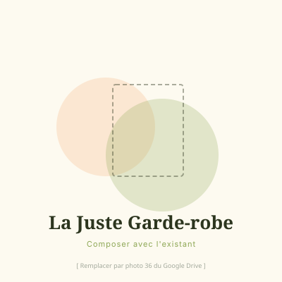

Accompagnement individuel premium
Pour composer avec ce que tu as déjà, sans tout racheter.
Je réserve mon appel découverte
Tu n'as peut-être pas besoin de repartir de zéro. Tu as besoin de regarder ce que tu as déjà avec un œil nouveau.
La Juste Garde-Robe, c'est l'offre complète pour celles qui veulent aller jusqu'au bout de la démarche et repartir avec un dressing qui leur ressemble vraiment, composé avec ce qui est déjà là.
L'accompagnement se déroule en trois séances, espacées pour laisser le temps à chaque découverte de s'installer.
Des questionnaires personnalisés sont à compléter en amont pour préparer chaque séance.
Bilan d'image, colorimétrie et visagisme.
Morphologie et style signature.
On ouvre ton dressing ensemble. On garde ce qui te ressemble, on laisse partir le reste sans culpabilité, sans précipitation. Puis on compose des tenues avec ce qui est là. Chaque tenue est photographiée et déposée dans ton book pour constituer une bibliothèque visuelle à consulter le matin, sans tâtonner.
Tout ce qui est inclus dans La Juste Essence, et aussi :
Tu ouvres ton armoire le matin et tu sais exactement quoi choisir. Tu ne passes plus 20 minutes à hésiter sur ta tenue. Tu n'achètes plus par impulsion, tu sais ce qui te manque vraiment, et pourquoi. Et tu réalises que l'essentiel était déjà là.
Un accompagnement de 9h réparti en 3 séances individuelles en présentiel (1ère et 2ème séance de 3h chacune aux Clayes-sous-Bois, 3ème séance de 3h à ton domicile) · 4 books personnalisés · Palette digitale de 65 couleurs avec un guide harmonie des couleurs · Liste de marques éthiques · Échanges WhatsApp pendant 2 mois
→ Je réserve mon appel découverte